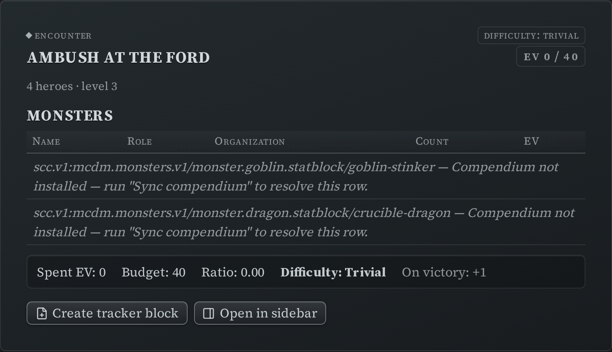
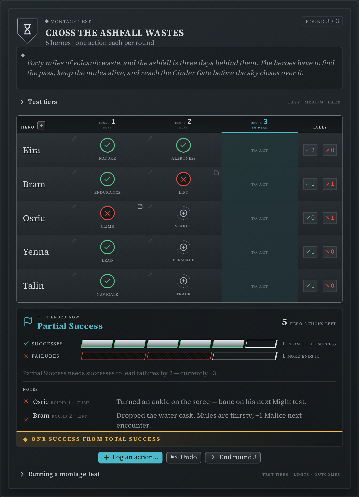
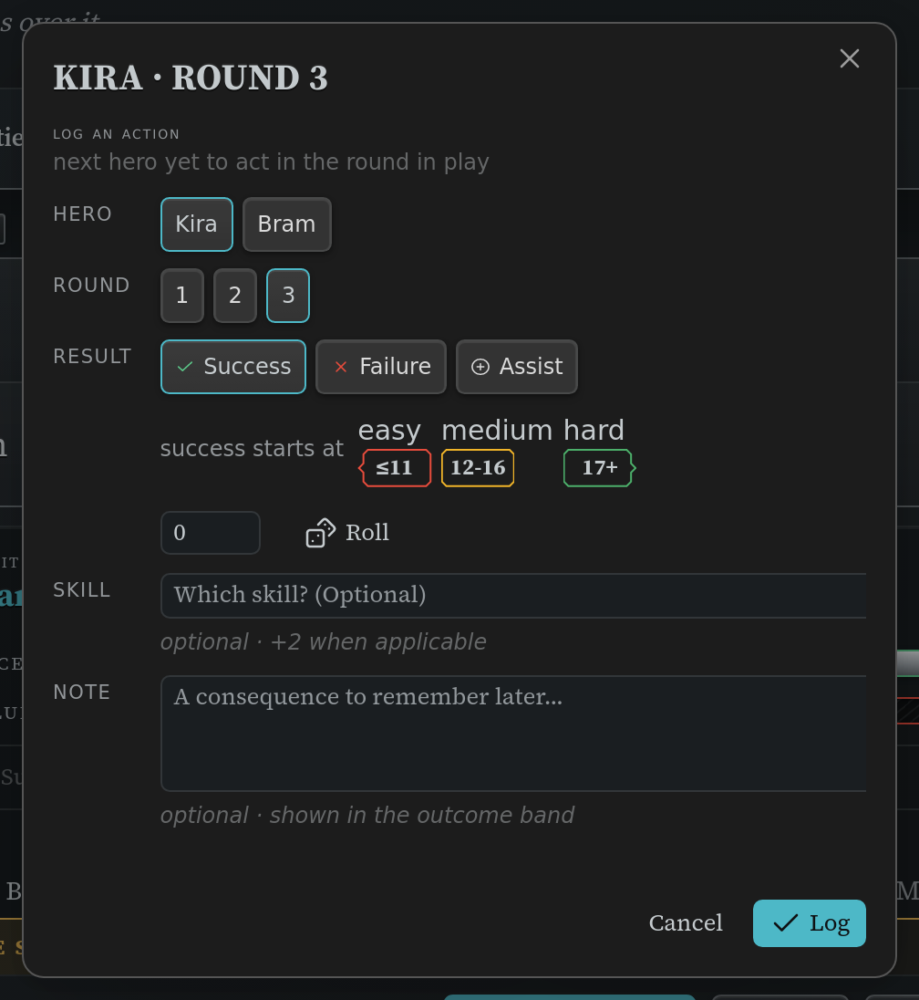
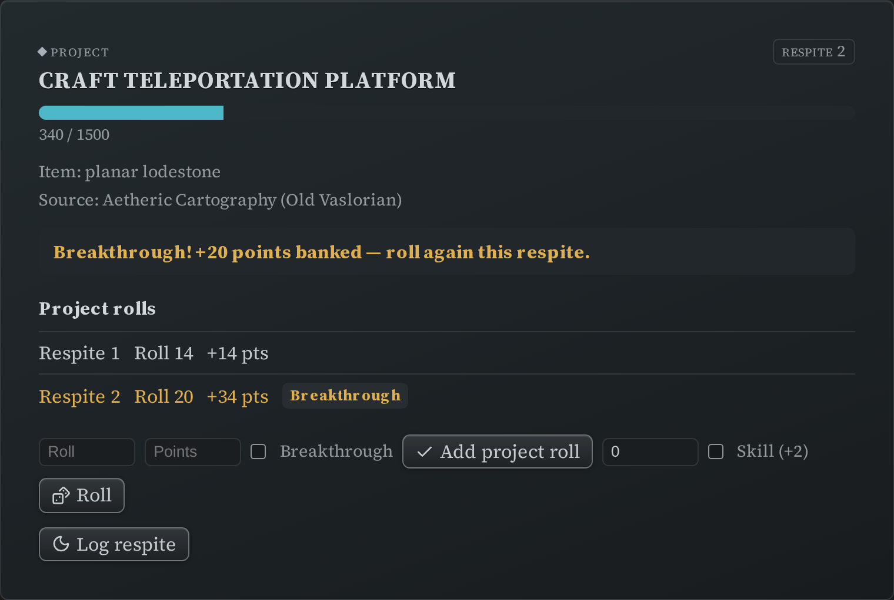
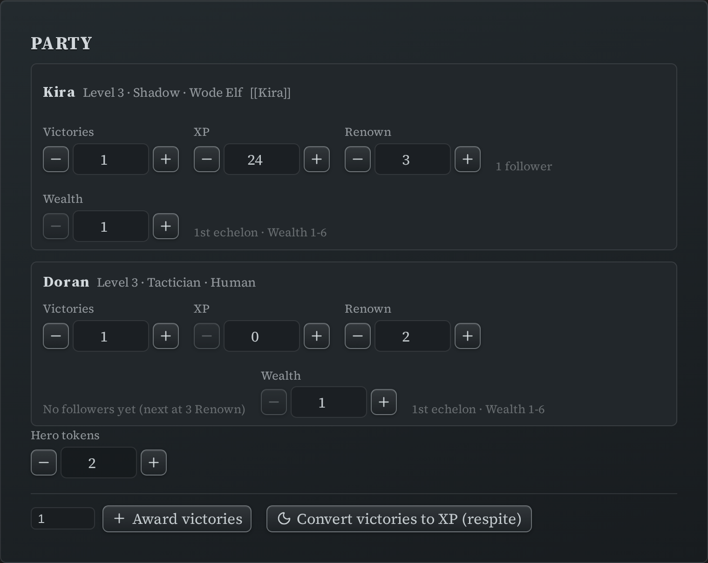

Director's Trackers¶
Four blocks for the things a Director tracks outside a fight: building an encounter, running a montage test, following a downtime project, and keeping the party's totals.
Like the other trackers, each of these writes its state back into the note as you use
it, and each can be pinned to the
sidebar so it stays available while you
move between notes. These blocks also carry a _dse_anchor: key once pinned — that's the
plugin's bookmark; leave it alone. (A ds-scc reference block never gets one — see
Pinning a block to the sidebar.)
Encounter builder (ds-encounter)¶
List the monsters you're thinking of using and the builder totals their Encounter Value against your party's budget.
~~~ds-encounter
label: Ambush at the ford
party:
hero_count: 4
hero_level: 3
monsters:
- code: scc.v1:mcdm.monsters.v1/monster.goblin.statblock/goblin-stinker
count: 6
squad: minion
- code: scc.v1:mcdm.monsters.v1/monster.dragon.statblock/crucible-dragon
count: 1
~~~

| Field | What it is |
|---|---|
party.hero_count, party.hero_level |
How many heroes, and what level — this sets the budget. |
party.victories |
The party's Victories, which raise the budget. |
monsters[].code |
A compendium code for the creature. One row per creature type. |
monsters[].count |
How many of them. |
monsters[].squad |
minion or captain, when the row is part of a minion squad. |
label |
A name for the encounter. |
Each row is looked up in your synced compendium; a code that can't be found is listed with the reason and left out of the totals rather than silently dropped. Nothing works here until the compendium is synced — the builder reads the creatures' stats from it.
The summary line shows spent EV, the party's budget, the ratio between them, a difficulty band (trivial / easy / standard / hard / extreme) and the Victories the party earns for winning. Budgets are worked out for parties of 1–6 heroes at levels 1–10; outside that range the budget shows as unset and only the spent EV is shown.
Two buttons finish the job:
- Create tracker block writes a matching initiative tracker block at the end of the note, with the monsters grouped (minions as squads) and ready to run.
- Open in sidebar does the same and pins the new tracker to the sidebar.
The block also keeps a _computed: key with the last totals. It's a display cache — the
builder recalculates every time it renders, so don't bother editing it.
Montage Test tracker (ds-montage)¶
~~~ds-montage
title: Cross the Ashfall Wastes
description: |
Forty miles of volcanic waste, and the ashfall is three days behind them. The heroes
have to find the pass, keep the mules alive, and reach the Cinder Gate before the sky
closes over it.
rounds: 3
success_limit: 6
failure_limit: 3
successes: 0
failures: 0
participants:
- name: Kira
skills_used: []
- name: Bram
skills_used: []
current_round: 1
~~~

A working board for a Draw Steel montage test: one row per hero, one column per round, and
a running tally beside each row. description is an optional brief — a few lines of prose
about the montage — shown above the board.
The running successes/failures under the outcome banner are the block's own kept totals, not something recomputed from the board — the board shows the individual tests, the banner shows the running score, and the tracker never re-derives one from the other. That's why a hand-edited total (or a block from before this board existed) can disagree with what the board shows and still be trusted: your kept total is never silently overwritten by a recount.
Logging an action. Click the Log an action… button at the bottom of the card, or click directly on a hero's cell for the round in play, and a small form opens: pick the hero and the round (both are pre-filled for you), pick success, failure or assist, and optionally name the skill used and add a note. Nothing is written until you press Log. The form also shows, as a reminder, which power roll result starts a success at each difficulty — and if you have rolling turned on, a Roll button right there resolves the test and picks the result for you.

Correcting a mistake. Click an already-logged cell (it shows a small pencil mark) to open the same form pre-filled with what's recorded, so you can change the result, the skill, or the note — or remove it outright with the Remove button. This is also how you fix a hero's typo'd result if you ever hand-edit the note directly.
Notes. Anything you type in a test's Note field — a consequence, a complication, a reward — shows up listed under the outcome banner below the board, tagged with the hero and round it happened in.
The skill-reuse rule. A hero can't use the same skill twice in one montage (the book's own rule). The tracker warns you right in the form when you try — it never blocks you, since the Director always has the final call.
Test tiers and running the montage. Above the board, Test tiers is a collapsed strip you can open for a quick-reference table of what each power roll result means at each difficulty (with any reward or consequence noted). Below the board, Running a montage test is a collapsed panel covering the same tiers plus how to set limits and how a montage ends — leave both closed for a quick glance, or open either when you need the detail.
Ending a round. Below the board, next to Log an action…, the End round N button moves everyone on to the next round — it's the only way to advance the round short of hand-editing the block. If ending a round uses up the last one and no limit has been hit, the montage finishes there (the outcome banner updates on its own).
Undoing the last thing you logged. The Undo button beside it removes whatever was logged most recently — handy right after a slip of the finger. It only undoes the single most recent entry; for anything further back, click that cell directly to correct or remove it.
When a montage finishes. The board stands down to two buttons: Reopen, if the montage simply ran out of rounds with no limit reached (it adds one more round and picks up where you left off), and Clear all, which wipes the running successes, failures, the round, and everyone's logged actions and used skills so the same block can run the montage again from the top. Once a success or failure limit has actually been hit, that result is final — Reopen isn't offered, and Clear all is the only way back.
The card's menu (⋯). Hover the card for its menu panel: Add a round extends the montage by one round; Add a hero adds a new participant by name; Set limits… opens a small form to change the success/failure limits; Reset progress clears the running successes, failures, the round, everyone's logged actions and used skills — your setup (title, description, limits, roster) survives it, so the same block can run the montage again. (This is the same reset Clear all performs once the montage is finished — just reachable at any time, not only once the board is done.)
Project tracker (ds-project)¶
~~~ds-project
goal_name: Craft Teleportation Platform
goal_code: scc.v1:mcdm.heroes.v1/project/craft-teleportation-platform
goal_points: 1500
accrued: 340
prerequisites:
item: planar lodestone
source: Aetheric Cartography (Old Vaslorian)
current_respite: 2
rolls:
- { respite: 1, roll: 14, points: 14 }
- { respite: 2, roll: 20, points: 34, breakthrough: true }
~~~

Tracks one downtime project: the goal, its prerequisites, the points accrued so far, and every respite roll that got you there.
goal_nameandgoal_pointsare yours to set. If you give agoal_codeinstead and have the compendium synced, the tracker fills the name and goal from the compendium entry for display. Where a project's goal is conditional or given per tier, it leaves the number blank rather than guessing.- Log a roll manually, or let the built-in roller do it if you have rolling turned on. A natural 19–20 is a breakthrough: it adds a +20 bonus and prompts you for the extra roll.
rolls[]andaccruedare maintained for you as you log.
Party tracker (ds-party)¶
~~~ds-party
members:
- name: Kira
level: 3
class: Shadow
ancestry: Wode Elf
victories: 1
xp: 24
renown: 3
wealth: 1
hero_ref: "[[Kira]]"
party:
hero_tokens: 2
~~~

One row per hero with level, class, ancestry, victories, XP, renown and wealth, plus the
party's shared hero token pool. hero_ref is an ordinary link to that hero's note.
Each value has a stepper, and the action bar can award Victories to everyone at once. The tracker also surfaces what the rules key off those numbers — a member's echelon, and how many followers their renown supports. Convert victories to XP (respite) clears everyone's Victories and reminds you to award XP; it doesn't invent an exchange rate, so XP stays a number you enter.